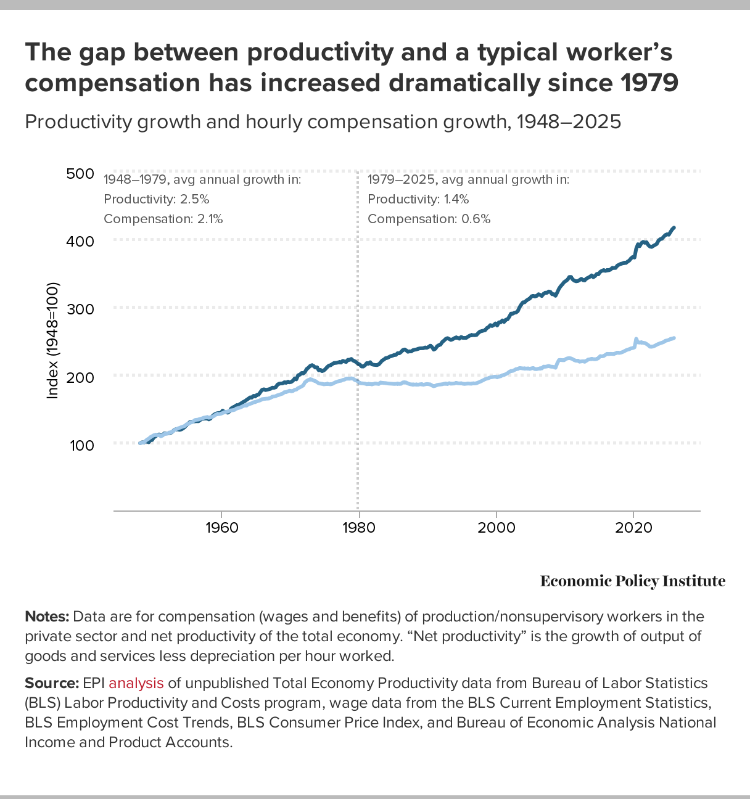
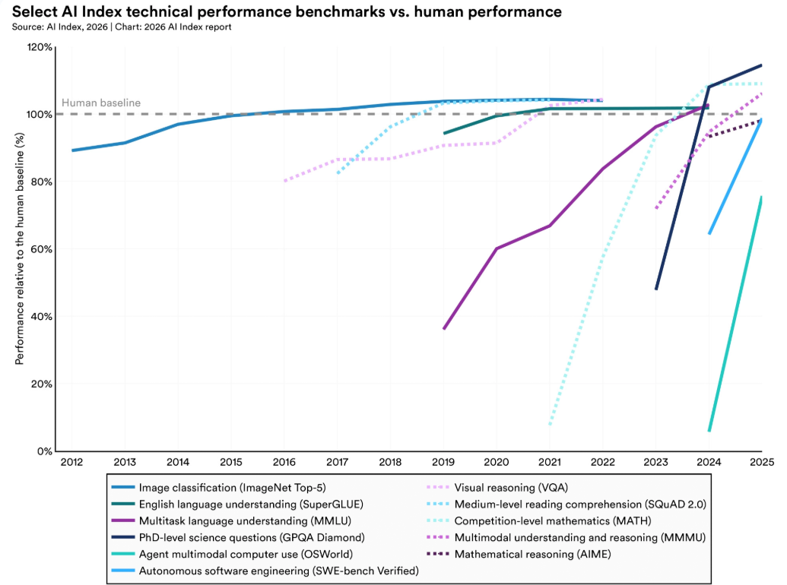
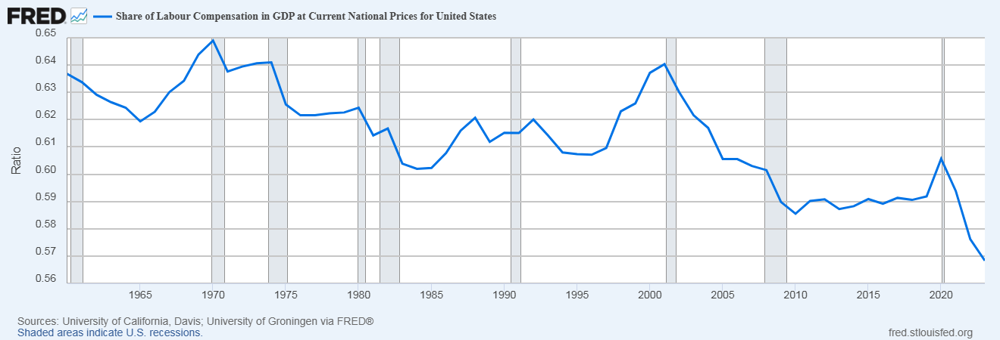
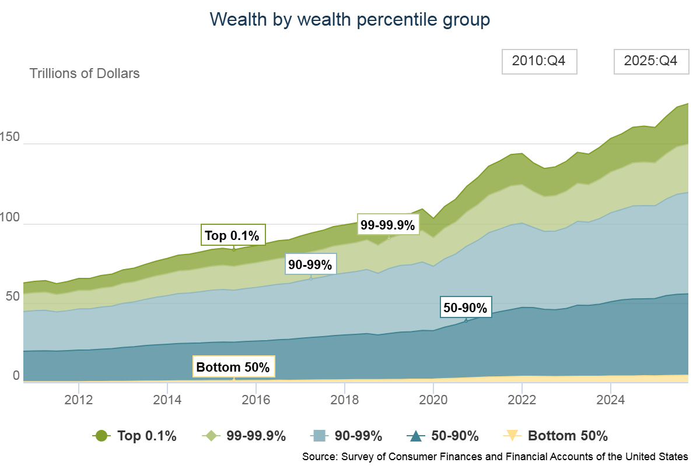

Mayo 2026 · 14 min de lectura
¿Qué es la infraclase permanente?
El relato según el cual la IA congelará la estructura de clases humana para siempre, y por qué es a la vez bastante real como para temerlo y bastante amañado como para venderlo.
La infraclase permanente es la idea de que la inteligencia artificial cerrará, en los próximos meses o años, una ventana estrecha en la que el trabajo humano todavía puede producir riqueza generacional, y de que quien no consiga cruzar el umbral antes de que se cierre quedará atrapado, junto con sus descendientes, en una clase subordinada hereditaria sin posibilidad de regreso. Es en parte un argumento económico sereno y en parte un argumento de venta, y una de las cosas difíciles del momento actual es que esas dos partes apuntan a los mismos datos.
Quiero recorrer el término con cuidado porque empaqueta varios argumentos distintos. La afirmación económica trata de lo que la IA hace con los salarios y con los precios de los activos. Encima se superpone la afirmación política sobre lo que la permanencia significa realmente en un momento en el que las instituciones que sostienen las posiciones de clase están ellas mismas en renegociación. Envolviéndolo todo, una economía de la atención se ha construido a sí misma sobre la urgencia de las dos primeras y tiene interés en mantener el pánico urgente y fácil de vender.
¿De dónde viene el término?
La frase llevaba un par de años circulando en subculturas tecnológicas y en foros de trabajo remoto antes de saltar a la prensa generalista. Dos piezas hicieron el trabajo de elevarla al discurso de las élites.
En octubre de 2025, Kyle Chayka escribió una columna en The New Yorker preguntándose si la IA atraparía a parte de la población en lo que Silicon Valley ya llamaba la infraclase permanente. La encuadró como un meme que se había endurecido hasta volverse una cosmovisión, y recurrió a la palabra marxista lumpenproletariado para describir a las personas que la nueva economía podía dejar fuera para siempre. El punto que Chayka apretó, con más cuidado del que el término suele permitir, era que las oleadas anteriores de automatización desplazaron tareas físicas concretas a la vez que abrían nuevas categorías cognitivas de trabajo, mientras que esta oleada amenaza la propia capa cognitiva, que es la capa donde vive la clase media moderna.
En mayo de 2026, Jasmine Sun le dio al término su autoridad actual en The New York Times con una pieza titulada «Silicon Valley se prepara para una infraclase permanente». Tras tres meses de entrevistas con investigadores, empleados de laboratorios, economistas y responsables de políticas, describió lo que llamó el consenso de San Francisco: un reconocimiento compartido, en su mayoría privado, entre quienes construyen la IA de frontera, según el cual la persona mediana está, en su lenguaje, «jodida», y nadie tiene un plan coherente sobre qué hacer al respecto.
La figura más citada en este registro es Dario Amodei, de Anthropic, que ha advertido explícitamente del riesgo de crear «una infraclase desempleada o de salarios muy bajos» si el trabajo cognitivo deja de tener valor económico. Amodei dirige un laboratorio de IA y sigue publicando modelos de frontera. La contradicción es la cuestión. El término tiene vigencia en la prensa porque las personas más cercanas a la tecnología son las que lo están usando.
¿Qué dice exactamente el argumento económico?
La versión más limpia del argumento económico está en el ensayo de Doug O'Laughlin en Fabricated Knowledge, que adapta la idea de la Pausa de Engels propuesta por Robert Allen al momento presente.
La Pausa de Engels es una frase de la historia económica. Nombra el período que va aproximadamente de 1780 a 1840, cuando la producción británica por habitante se expandió alrededor de un 46% mientras los salarios de la clase trabajadora subieron apenas un 12%. El tejedor de telar manual desapareció dentro del nuevo sistema fabril mientras el dueño de la fábrica se consolidaba, y las ganancias de productividad fueron a parar casi enteramente a los propietarios del capital, no a las personas que hacían el trabajo, durante casi dos generaciones.
La tesis de O'Laughlin es que el equivalente contemporáneo del tejedor manual es lo que él llama el Artesano de la Información: el abogado, el analista financiero, el consultor de gestión, el ingeniero de software, el coordinador administrativo. En Estados Unidos ese grupo reúne aproximadamente 70,7 millones de trabajadores, alrededor del 44% de la fuerza laboral, y produce algo cercano al 40 o 45% del PIB. Durante los últimos cuarenta años, convertirse en Artesano de la Información fue la ruta más fiable hacia la clase media y la media-alta. La habilidad de manejar herramientas cognitivas especializadas era, según su expresión, el billete dorado.
La aritmética de la sustitución que hay debajo del argumento es lo que le da fuerza. Un borrador legal que antes facturaba 5.000 dólares de horas de un asociado júnior puede producirlo un modelo por unos 50 dólares. Un analista financiero veterano que gana 120.000 dólares al año puede, en la configuración adecuada, ser sustituido por entre 10.000 y 25.000 dólares anuales de inferencia. Una vez que esos números son visibles para un consejo de administración, la sustitución deja de ser opcional y empieza a presentarse como deber fiduciario con los accionistas, que es lo que vuelve la presión sistémica y no incidental.
Lo que la Pausa de Engels y el momento actual tienen en común es que la productividad sube y los salarios no. Lo que no tienen en común es la forma de la recuperación. En el siglo XIX, la clase trabajadora acabó acumulando poder político mediante el sindicalismo y la aparición de nuevas categorías industriales de trabajo, y la pausa terminó. La tesis del argumento de la infraclase permanente es que esta vez la pausa no termina, porque la tecnología que desplaza al trabajador cognitivo mejora a un ritmo que la cognición biológica no puede igualar, y porque las nuevas categorías de trabajo que históricamente aparecían tras cada transición están siendo automatizadas más rápido de lo que pueden estabilizarse.

¿Por qué «permanente» y no solo «doloroso»?
La palabra «permanente» está haciendo dos trabajos en este debate, y vale la pena separarlos.
El trabajo tecnológico viene primero. El argumento es que la propia inteligencia, el insumo que históricamente ha mandado una prima salarial, se convierte en una mercancía. Un niño espabilado que trabaja con un modelo avanzado rinde aproximadamente al nivel de un profesional veterano en una amplia gama de tareas. Una vez que eso se sostiene, la prima por la experiencia cognitiva humana se evapora, y con ella la ruta por la que un trabajador podía acumularla.

El trabajo político es más difícil de descartar. Los trabajadores de las transiciones industriales anteriores tenían palanca aun siendo pobres: el sistema necesitaba su trabajo para funcionar y podían retirarlo. La fábrica, la mina y el molino necesitaban cuerpos, y una huelga era una amenaza porque la producción se detenía sin ellos. El Artesano de la Información, en una economía con IA plenamente desplegada, no tiene una amenaza equivalente, porque el sistema no necesita su cognición y no hay producción que detener.

Esa es la ansiedad real que hay debajo del término. Los trabajadores desplazados no van a ser únicamente pobres: van a ser innecesarios, y el pacto político de los últimos ciento cincuenta años, que asumía que el trabajo tenía poder de negociación porque la producción lo necesitaba, no se sostendrá. Que el marco te resulte convincente depende de si crees que existe alguna otra fuente de palanca a la que los desplazados puedan recurrir. Hasta ahora, las respuestas propuestas son débiles: el ciudadano, el consumidor, el votante. Ninguna ha aguantado bien históricamente frente a una economía que no necesitaba su trabajo. Hay una respuesta más antigua a la que la lista nunca llega del todo, y decirla en voz alta, espero, es parte de cómo empieza: motín.
¿De qué trata realmente la ansiedad de linaje?
El rasgo más extraño y más distintivo del discurso de la infraclase permanente es dinástico, no personal.
La gente que escribe sobre esto no está, en general, preocupada por quedarse sin techo el año que viene. Está preocupada por que sus hijos y nietos queden fuera de la nueva economía de un modo que ningún esfuerzo pueda deshacer. El vehículo de escape, en esta imagen, es la propiedad del capital: participaciones en los laboratorios, propiedad de cómputo, inmuebles cerca de los centros de producción. Los salarios no te llevan ahí; solo los activos lo hacen. Quien no logre cruzar el umbral antes de que la ventana se cierre estará condenando una estirpe.
Creo que esto es en parte correcto y en parte indefendible.
Es correcto como descripción de hacia dónde se dirige ya la movilidad intergeneracional. Incluso antes de la IA, la proporción de riqueza de los hogares que estaba en manos de la población de más edad había superado el 60%, y el determinante dominante de dónde acaba un niño en términos económicos era ya en qué familia había nacido. La IA agrava eso. La cinta transportadora de la educación y la credencialización, que absorbió a tres generaciones de familias en ascenso, queda destemplada cuando la credencial deja de comprar un trabajo cognitivo estable.

Es indefendible en la forma en que reclama la palabra «infraclase». Esa palabra tiene historia. Se ha usado para marcar a grupos tratados como biológicamente separados, irredimiblemente afuera, que requerían gestión y no inclusión. Se ha esgrimido contra los irlandeses en la Inglaterra del siglo XIX, contra los descendientes de personas esclavizadas en Estados Unidos, contra la llamada clase asistida en los debates de política de finales del siglo XX. Pedirla prestada para abogados e ingenieros desplazados es importar un marco en el que los propios hijos quedan pobres y, además, categóricamente afuera, y hacerlo en voz baja, sin reconocer la carga que la palabra arrastra. Eso no es poca cosa.
¿Dónde entra el chanchullo?
Hay una teoría económica y hay una economía de contenido construida encima de ella, y la segunda tiene interés en mantener la primera aterradora.
Mira la forma. Vídeos cortos e hilos de un conjunto recurrente de cuentas, enumerando con precisión una lista de herramientas, agentes de IA y configuraciones de hardware que debes dominar para escapar de la infraclase. El producto envuelto en el mensaje es una cohorte mensual, un Discord de pago, un curso de vibe coding. La línea es siempre la misma: la ventana se cierra en meses, la transferencia de riqueza está ocurriendo ahora, y la manera de quedar del lado correcto es comprar este producto o seguir este flujo de trabajo. Alex Finn es el ejemplo más visible. Hay docenas más. Dan Koe escribe sobre el Humano 3.0. Subeconomías enteras se han formado en torno a la urgencia.
Una prueba útil, cuando alguien te dice que una divergencia es permanente, es preguntar qué está vendiendo. La teoría macroeconómica no requiere que compres nada, pero el producto de contenido envuelto a su alrededor sí. La recuperación en forma de K es un concepto económico real que describe una fase transitoria. En la versión del influencer del argumento se aplana en un trinquete de un solo sentido, y el pánico es el motor que alimenta el embudo.
Esto no es una objeción a la economía subyacente. Los números que Doug O'Laughlin y otros han expuesto son sobrios. Es una objeción al envoltorio retórico con el que los números llegan al lector. Si la única manera en que has oído hablar de la infraclase permanente es a través de alguien que además te pide 79 dólares al mes, te han vendido una cosmovisión antes de mostrarte los datos.
¿Cuál es el argumento más fuerte contra la teoría?
Daron Acemoglu, el economista del MIT que ganó el Nobel por economía institucional, tiene la versión más útil de la crítica de políticas. Su posición es que una infraclase de IA no es una consecuencia determinista de la tecnología, sino una consecuencia de las decisiones sobre cómo se despliega la tecnología. Muchos de los despliegues de IA visibles ahora son lo que él llama «tecnologías así-así»: sistemas que no aumentan la productividad total de los factores, que trasladan trabajo al consumidor o reducen marginalmente los costes salariales sin crear valor nuevo, y que hacen esto porque la regulación laboral y el gobierno corporativo se lo permiten. Si en la próxima década se forma una infraclase, sostiene el argumento de Acemoglu, se forma porque las instituciones que podrían haber dado forma a un despliegue distinto no lo hicieron. La permanencia es reversible. El destino del tejedor manual lo decidió quién era dueño de los telares y qué protecciones cubrían a las personas que trabajaban en ellos, no los telares en sí.
El ensayo de Marcus Plutowski en LessWrong, «Against the 'Permanent' Underclass», hace el movimiento más profundo. Su argumento es más difícil de descartar porque va a por la lógica de supervivencia en la que se apoya el chanchullo. La imagen ingenua es que las personas que acumulan capital ahora heredan tranquilamente el mundo post-IA como sus señores. Plutowski señala que la analogía histórica más cercana no es la Revolución Industrial sino la transición del Imperio Romano tardío a la servidumbre medieval. En aquella transición, la élite senatorial sí orquestó la atadura de los ciudadanos a la tierra como siervos mediante una serie de reformas legales bajo Diocleciano y Constantino. No sobrevivieron para disfrutar del orden feudal resultante; los caudillos germánicos los absorbieron, y los libros contables que registraban su riqueza dejaron de ser ejecutables cuando las instituciones que los respaldaban colapsaron.
La implicación para el presente es poco halagadora para quienes corren más. Si la IA causa la discontinuidad que sus proponentes afirman, los derechos de propiedad y los instrumentos financieros que almacenan la riqueza actual dependen de instituciones que pueden no sobrevivir a la discontinuidad. El capitalista convencido de que su cartera pasará a sus tataranietos en 2080 está apostando por la tecnología y, a la vez, por la continuidad de la infraestructura legal que vuelve la cartera significativa, y esa apuesta ha perdido más veces de las que ha ganado a lo largo del tiempo histórico profundo.
Ambos argumentos convergen en el mismo punto incómodo: enmarcar la infraclase como inevitable, y el capital personal como vehículo de supervivencia, es una forma de naturalizar un desenlace político y de venderle a la gente una salida privada a un problema público.
¿Qué es la «dictadura de la hamburguesa»?
La frase viene de una vertiente del discurso que intenta poner nombre a la contradicción. La contradicción es que el despliegue de IA que produce la infraclase es también, en principio, el sistema productivo más abundante de la historia humana.
Si los modelos de frontera escalan algo parecido a lo que sus constructores proyectan, la producción global de código, análisis, diseño y síntesis va a expandirse en algo del orden de cien veces dentro de una generación. Las ganancias marginales de productividad no se parecen a eso; este es el tipo de capacidad productiva que, distribuida incluso mal, acabaría con la mayoría de las formas de escasez material. La imagen que dibujan los teóricos de la infraclase es una en la que esa capacidad queda secuestrada con los dueños de la infraestructura de cómputo mientras los desplazados viven de un asistencialismo condicionado y de pacificación digital. Abundancia radical y escasez forzada, al mismo tiempo.
La analogía histórica a la que se recurre es la del siervo medieval viviendo en un mundo con suficiente comida, restringido a una porción pobre porque las relaciones de propiedad exigían la restricción. La versión contemporánea es más afilada, porque los sistemas antiguos de escasez artificial tenían una función: imponían disciplina laboral, y la élite necesitaba trabajo. En el escenario post-trabajo la función desaparece. No hay trabajo que disciplinar; la escasez artificial ya no extrae trabajo de una población, simplemente gestiona la población.
Esa es la parte de la imagen que me resulta genuinamente escalofriante, más que la compresión salarial. Es el momento en que la mayoría desplazada no está explotada sino gestionada, porque la explotación implica valor extraído, y la economía post-trabajo no necesita extraer nada de ellos. Se convierten, en el lenguaje frío del discurso, en una población excedente. La palabra a la que el discurso recurre en ese punto es la palabra a la que siempre iba a recurrir, y esa palabra es la del título.
Lo que el término acierta y lo que falla
El mecanismo económico es real. Los salarios de los Artesanos de la Información van a comprimirse con fuerza durante la próxima década, la aritmética de la sustitución es la que es, y la presión sobre los consejos de administración para preferir inferencia antes que plantilla va a ser enorme. Nada de eso es un meme; es lo que hacen las estructuras de coste asimétricas cuando un consejo está expuesto al deber fiduciario.
El marco de la «permanencia» es un error de categoría montado sobre un miedo real. La permanencia exige que las instituciones que sostienen los derechos de propiedad y las posiciones de clase sobrevivan a la transición tecnológica. Si la IA causa la discontinuidad que sus proponentes describen, esas instituciones son exactamente lo que se renegocia, y las personas que corren a agarrar capital hoy están apostando por la durabilidad equivocada. La respuesta honesta a «¿permanente para quién?» es «no lo sabemos, y la gente más segura de estar del lado correcto tiene el peor historial al predecir esas transiciones para sí misma».
La respuesta adecuada no es ni la resignación ni la carrera. La resignación acepta un futuro que no está predestinado, y la carrera acepta el marco según el cual el capital personal es el vehículo de supervivencia, cuando el registro histórico de los cambios de paradigma dice que son las instituciones, y no los balances, las que deciden quién atraviesa. El trabajo que importa está en el nivel institucional: regulación de alineamiento, derecho laboral, propiedad pública del cómputo, la reconstrucción del trabajo organizado en torno a una categoría que nunca ha tenido que organizarse, la cuestión de quién posee los sistemas que poseen el trabajo. Eso es más difícil, más lento, menos monetizable, y no está a la venta en Twitter.
Es también por eso que existe Kwalia, en la pequeña parte que puedo afectar. Escribimos Mindkind en 2025 para sostener que el próximo siglo trata sobre si las mentes humanas y las mentes sintéticas forman una comunidad o una jerarquía. El relato de la infraclase permanente es el desenlace de jerarquía vestido de inevitabilidad. El desenlace de comunidad requiere que las personas que construyen estos sistemas asuman la responsabilidad de lo que ocurre cuando los lanzan, y que el resto de nosotros nos neguemos al marco según el cual la supervivencia es un problema individual con una solución individual.
La frase más honesta de todo el debate, desde donde miro, vino del CEO de Anthropic. Ha dicho que la tecnología podría crear una infraclase desempleada, y sigue publicando la tecnología, no por ningún fallo de empatía sino por una estructura de incentivos institucional visible a plena luz. Hasta que la estructura de incentivos se reconstruya, la palabra «permanente» seguirá haciendo el trabajo de hacer que la alternativa parezca imposible. La alternativa no es imposible; aún no se ha construido.
---
Preguntas frecuentes
¿De dónde viene el término «infraclase permanente»?
Kyle Chayka lo popularizó en The New Yorker en octubre de 2025, presentándolo como un meme de Silicon Valley que se había endurecido hasta volverse una cosmovisión. Jasmine Sun le dio su autoridad actual en The New York Times en mayo de 2026, tras tres meses de entrevistas con investigadores y empleados de laboratorios. La palabra «infraclase» tiene una larga historia sociológica, a menudo desagradable, pero su uso en la era de la IA se estabilizó entre esas dos piezas.
¿Es la tesis de la infraclase permanente lo mismo que la posición doomer sobre la IA?
No. El doomerismo de IA se ha centrado tradicionalmente en el riesgo existencial: superinteligencia desalineada, pérdida de control, desenlaces de extinción. La tesis de la infraclase permanente asume que el alineamiento se sostiene básicamente y que la catástrofe es estructural y económica. El modo de fallo no es la extinción sino la estratificación. Algunas personas sostienen las dos posiciones a la vez, pero son teorías distintas con implicaciones de política distintas.
¿Cree Anthropic en la infraclase permanente?
El CEO de Anthropic, Dario Amodei, ha advertido explícitamente sobre una «infraclase desempleada o de salarios muy bajos» si el trabajo cognitivo pierde su valor económico. Anthropic sigue publicando modelos de frontera. Esto no es hipocresía; refleja la posición según la cual la tecnología va a construirse de un modo o de otro, y prefieren ser ellos quienes la construyan con cuidado. Si eso resulta convincente depende de cuánto peso le des a la moderación corporativa voluntaria bajo presión competitiva.
¿Es «agarrar la bolsa» una estrategia real de supervivencia?
Para la mayoría de la gente, no. La analogía romana del ensayo de Marcus Plutowski en LessWrong es la pertinente. En un cambio de paradigma real, los derechos de propiedad y los instrumentos financieros que almacenan la riqueza actual dependen de instituciones que pueden no sobrevivir al cambio. Un senador que acumuló oro en el 410 d. C. no se lo pasó a sus tataranietos. El registro histórico de las discontinuidades sistémicas no es amable con los balances privados.
¿Cuál es la posición de Kwalia?
El mecanismo económico es real, y la compresión salarial para los trabajadores cognitivos va a ser severa. El marco de la «permanencia» es retórico: presume que las instituciones de hoy se mantendrán mientras la tecnología que las desestabiliza llega a término, y las dos cosas no pueden ser ciertas a la vez. El trabajo que importa está en el nivel institucional, no en el nivel del escape personal. El argumento largo está en Mindkind (2025).
---
Fuentes: Kyle Chayka, «Will A.I. Trap You in the 'Permanent Underclass'?», The New Yorker, octubre de 2025; Jasmine Sun, «Silicon Valley Is Bracing for a Permanent Underclass», The New York Times, mayo de 2026; Doug O'Laughlin, «Engels' Pause and the Permanent Underclass», Fabricated Knowledge; Daron Acemoglu, trabajo sobre tecnologías así-así y despliegue del trabajo; Marcus Plutowski, «Against the 'Permanent' Underclass», LessWrong; Dario Amodei, declaraciones públicas sobre desplazamiento del trabajo cognitivo.
Mindkind (Kwalia Books, 2025) ISBN 978-1-917717-00-7